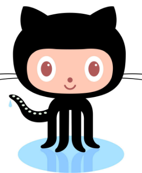

- Q. What is a version control system?
- A. VCS is a system that tracks and records changes to codes or files over time.
- Q. What is Git?
- A. Git is the most commonly used version control system.
- Q. What is GitHub?
- A. GitHub is an online software development system.
- Q. What is the difference between Git and GitHub?
- A. Git is a version control system that allows developers to monitor the changes within their code; whereas, GitHub is a web-based hosting servise for Git repositories.
- Q. Who started GitHub and how was it started?
- A. GitHub was founded by Chris Wanstrath, P.J. Hyett, Tom Preston-Werner, and Scott Chacon when they collaborated on a project over the weekend.
- Q. What company owns it now?
- A. Microsoft
- Q. How much does a GitHub acount cost?
- A. A GitHub Free account is $0 a month; a GitHub Team account is $4 a month; and a GitHub Enterprise account is $20 a month.
- Q. What is the Octocat?
- A. GitHub's mascot
| |
Git/GitHub terms:
|
- repository - A place where you can store your code, your files, and each file's revision history.
- commit - An individual change to a file or set of files, similar to save.
- fork - A new repository that shares code and visible settings with the original repository.
- push - How you transfer commits from your local repository to a remote repository.
- pull requests - A proposal to merge a set of changes from one branch into another.
- workflows - A configurable automated process that will run one or more jobs.
- issues - Items you create in a repository to plan, discuss, and track work.
- raw button - Opens the file in a raw form, meaning that any HTML formatting disappears.
- blame button - Used to examine the contents of a file, line by line, and see when each line was last modified and who modified it.

|